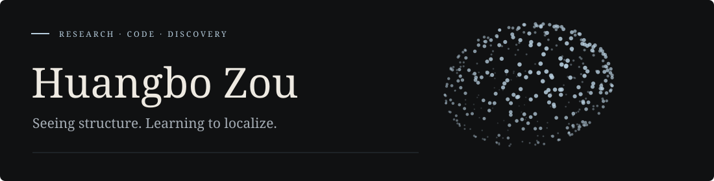
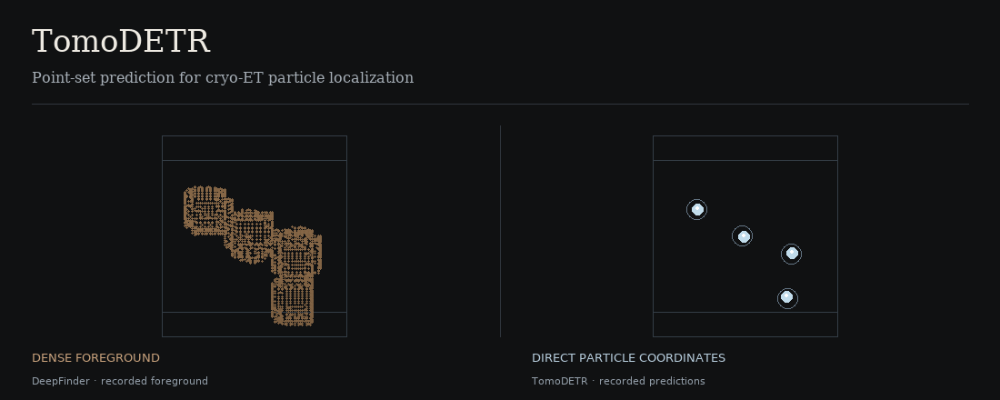

JackBo04 / README.md

I work on learning-based particle localization in cryo-electron tomography.
Selected research

TomoDETR: Point-Set Prediction with Cross-Window Refinement for Cryo-ET Particle Localization
Direct particle coordinates from point annotations, with learned cross-window refinement.